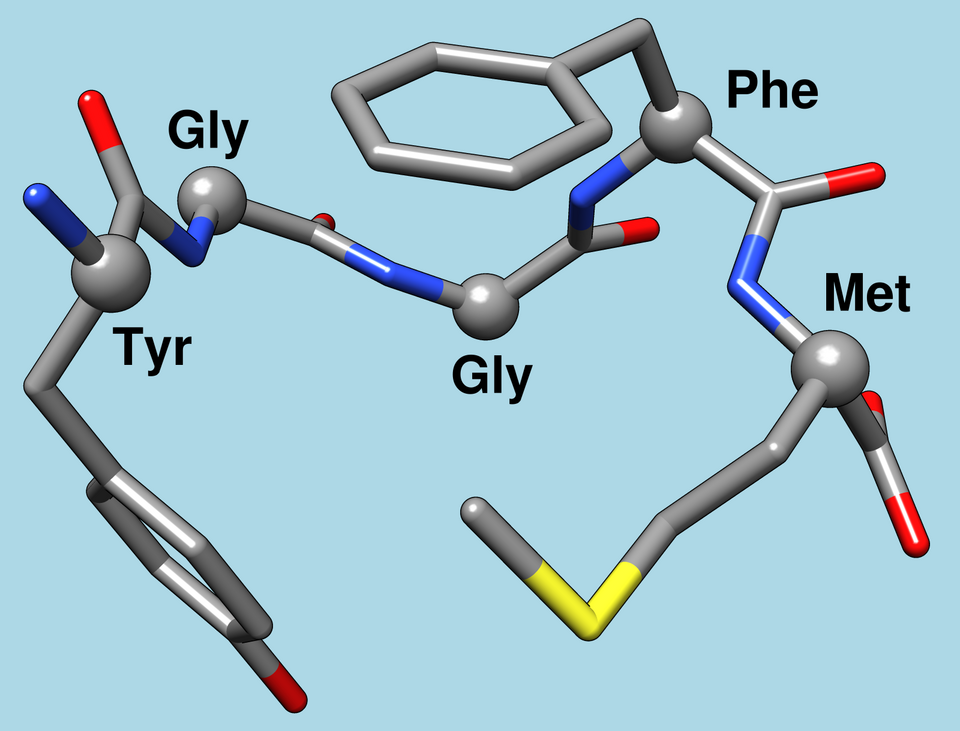

Enkephalin
An enkephalin is a pentapeptide involved in regulating nociception (pain sensation) in the body. The enkephalins are termed endogenous ligands, as they are internally derived (and therefore endogenous) and bind as ligands to the body's opioid receptors. Discovered in 1975, two forms of enkephalin have been found, one containing leucine ("leu"), and the other containing methionine ("met"). Both are products of the proenkephalin gene:[2]

The chemical compound itselfEndogenous opioid peptides
In Lobotomy Corporation, your goal is to produce enkephalin for the different wings of the city that are willing to purchase it from you by extracting it from different abnormalities and such.